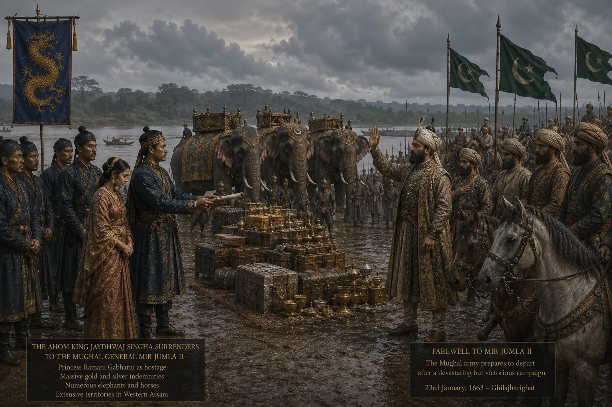

Departure of Princess Ramani Gabharu to Delhi
1663 · Against the Mughal Empire

Six-year-old Princess Ramani Gabharu (daughter of Jayadhwaj) is tearfully handed over as part of the treaty to be sent to Delhi, where she later marries Prince Azam Shah as Rahmat Banu Begum.
Sources have not yet been catalogued for this record.
People: Jayadhwaj Singha (Sutamla), Ramani Gabharu
Open this scene in the interactive archive · Follow this event on MAP